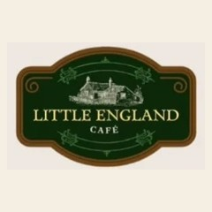
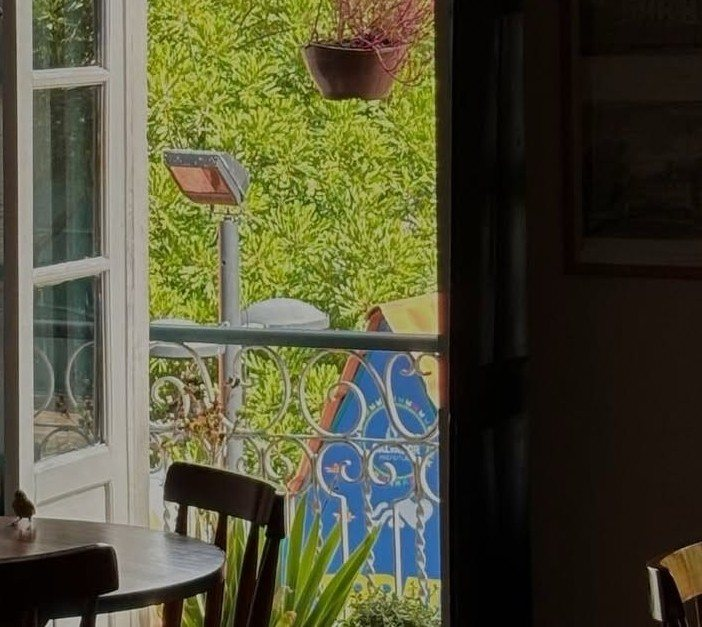

Início · Pedido de mesa
Peça a sua mesa no Little England Café
Escolha o dia, o horário, quantas pessoas vêm e a ocasião: o pedido de mesa chega organizado no WhatsApp da casa, que responde e confirma.

Pedido de mesa
Escolha a sua mesa
Como funciona
Do toque à mesa confirmada
- EscolhaData, horário, número de pessoas e ocasião, só nos dias em que a casa abre.
- ConfiraO resumo mostra tudo antes de enviar.
- EnvieA mensagem vai pronta para o WhatsApp (71) 99735-3220.
- A casa confirmaA equipe responde se há mesa no horário pedido.
O salão
Poltronas, mesas e a varanda
O salão tem poltronas Chesterfield, mesinhas redondas e quadros negros; a varanda abre pela janela colonial. Se tiver preferência, anote nas observações.

Antes de vir
Bom saber
- Terça a quinta, 9h–17h; sexta e sábado, 9h–18h; domingo, 10h–18h. Segunda, fechado.
- Especiais e bolos do dia ficam nos quadros negros.
- Leite vegetal (aveia com castanha) por + R$ 3,50.
- Para o Paint & Tea e as oficinas, a inscrição é à parte, pelo WhatsApp.
Dúvidas frequentes
Perguntas comuns
A mesa fica confirmada ao enviar?
Não: é um pedido. A mesa vale depois que a equipe confirma no WhatsApp.
Posso pedir para hoje?
Pode mandar a mensagem; a casa responde conforme a lotação do salão.
Dá para ir em grupo?
Diga quantas pessoas vêm no pedido e a equipe informa o que é possível no salão.
Sem pressa
A mesa, o chá e o scone esperam por você.
Terça a quinta, 9h às 17h · sexta e sábado, 9h às 18h · domingo, 10h às 18h. Mande o pedido de mesa e a casa confirma pelo WhatsApp.